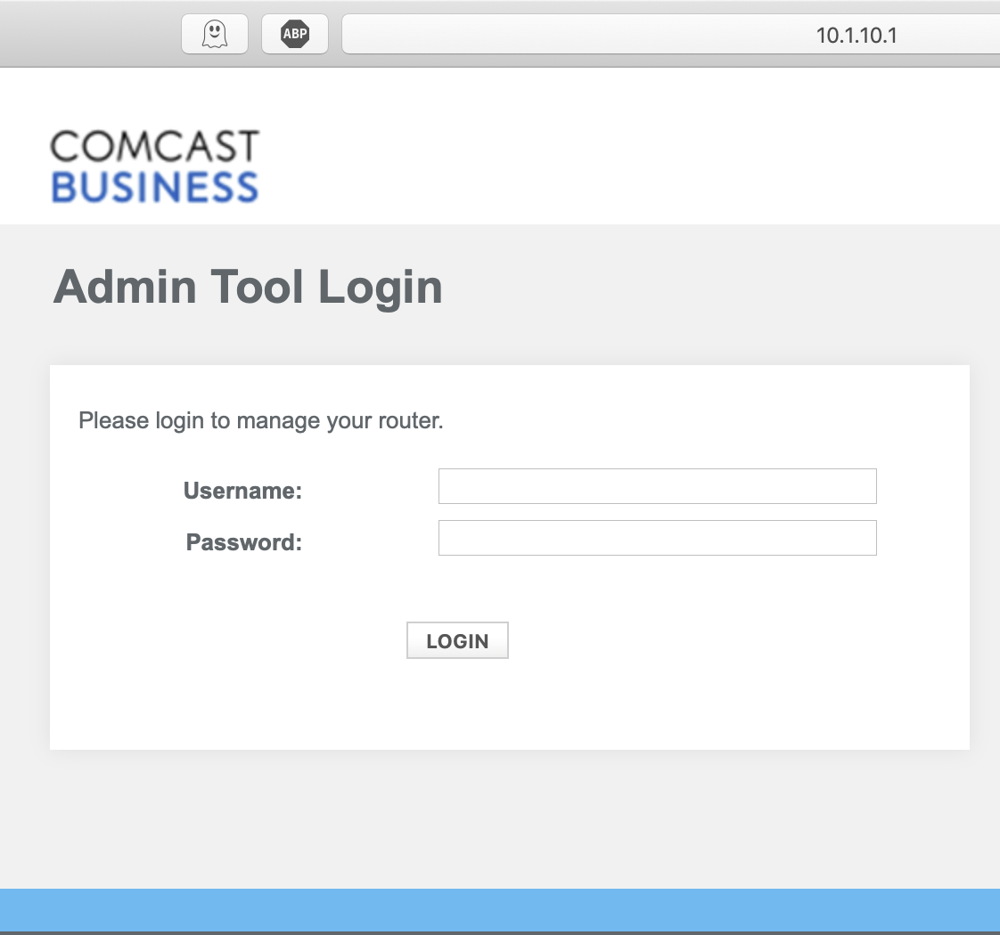

Author: Kenneth Andrews
10/21/19
If you have ever tried to set up a local game or file server you may have run into a brickwall with getting everything connected. 2 hours into trying to get your friends connected you figure out you need to port forward. If you have never heard of port forwarding this probably sounds a lot like latin. However, you'll find that it's not all that complicated.
In short, port forwarding is nothing more than telling your router "if you recieve packets with this port send those packets to Computer A". Every PC, or any device with networking capability for that matter has an ip address. When you are trying to connect to your server your client uses an IP address to facilitate that communication. Here's the problem though. When you are connecting to a local pc from outside your network, the client can't communicate with the server via it's local ip. Instead you have to use your external IP address which your ISP assigns you. The packets are then sent from the client to your ISP and are finally recieved by your router. Your router however has no idea what to do with these packets. You need tell your router to forward those packets to the local machine in questionr; your server. See, not such a dead language after all.
The first step in port forwarding is getting into your routers administration panel. This is fairly straight forward, but the proccess can differ depending on your routers specific model.
Open up the local shell
Type in ipconfig in windows, or ifconfig in linux & MacOS. Take note of your ipv4 address and default gateway. Type in netstat -rn in mac or linux if your default gateway is unlisted.

Open up your favorite web browser and paste the default gateway you got from the shell earlier.
Enter the routers default username and password. Unfortunatly this varies from one model to another. Generally it will be some combination of admin & password, or admin & admin. If that doesn't work, you may have to look at the model listed on the router and do a web search for it's default name and password. You can change these defaults once you are logged in.
Navigate to the port forwarding section. This may look different depending on your router. For example it may be under a networking, advanced, firewall, or even gaming tab.
Now you should see a list of boxes you can fill out with the port forwarding information. Under ports you will want to use the port number associated with the application you are using. For example: a Minecraft server has the port of 25565. If there are two boxes which ask for a range of ports you can just use the same port twice, 25565-25565.
For the Ipv4 address you'll want to use the local ip of the computer you took note of in the terminal.
If you are given the option, go ahead and give it a name you'll remember and hit save.
Congratulations. You've just portforwarded